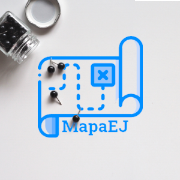

Tiago Perri Gonçalves de Oliveira
Portfólio
Lex Advocacia

Site institucional da Lex Advocacia, empresa de advocacia em Cornélio Procópio - PR, gerida pelo Dr. João Gonçalves de Oliveira Junior. Desenvolvido sob minha responsabilidade desde o design inicial até a publicação/manutenção do site. Confira o resultado final!
Ir ao site!MapaEJ

Integrante da equipe que desenvolveu o projeto pela Unect Jr., o MapaEJ é um ponto de encontro virtual entre comerciantes, autônomos e empreendedores com Empresas Juniores de Londrina e região. Encontre soluções!
Ir ao site!Projeto Infusion
Projeto construído nos estudos do curso "Web Design Completo", da Serfrontend, pela Udemy; Desenvolvido com o intuito de treinamento, apenas a página Home está online.
Ir ao site!TPGO - Web Design & Marketing Digital
Paleta de cores
#045B00
#0B1980
#000000
#f5f5dc
Fonte de Texto
Share Tech - AaBbCcDdEeFfGgHh12345!&@
Responsividade
Esse site contém versões para Computador, laptop, tablet, Iphones, Smartphones, etc.
O site que você está navegando agora, isso mesmo, Meu site pessoal! Veja algumas curiosidades de seu design.